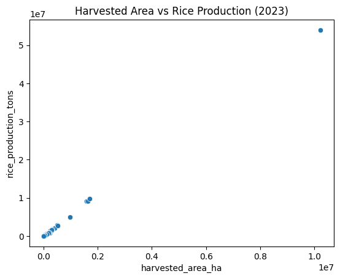
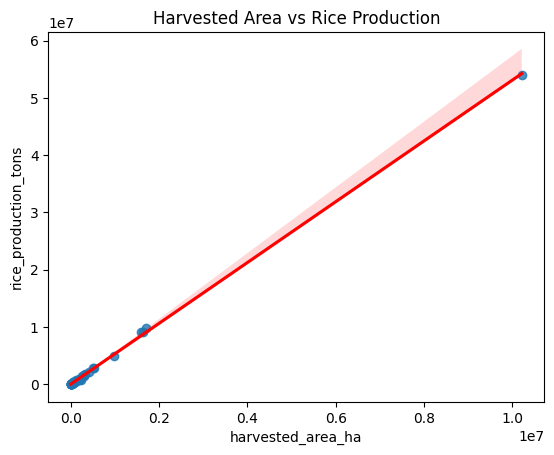

Linear Regression Analysis of Rice Production in Indonesia (2023)
This project applies Linear Regression to analyze and predict rice production across Indonesian provinces using harvested area data published by Badan Pusat Statistik (BPS).
Python · Pandas · Scikit-learn · Matplotlib · Google Colab
Problem & Motivation
Rice is a strategic agricultural commodity in Indonesia. Understanding the relationship between harvested area and rice production is essential for agricultural planning, food security analysis, and policy evaluation.
Dataset Overview
- Source: Badan Pusat Statistik (BPS)
- Year: 2023
- Level: Province
- Variables: Harvested Area (ha), Rice Production (tons)
Exploratory Data Analysis (EDA)
An initial scatter plot was generated to explore the relationship between harvested area and rice production. The visualization shows a strong positive linear relationship, supporting the use of linear regression.
Modeling Approach
A simple linear regression model was trained to model the relationship between harvested area and rice production.
Model Evaluation
MAE
66,269 tons
RMSE
106,381 tons
R²
0.995
Key Insights
- Rice production increases proportionally with harvested area.
- The relationship is almost linear at the provincial level.
- Linear regression performs very well for aggregated agricultural data.
Limitations & Future Work
The model uses only one explanatory variable. Future work may include productivity, climate factors, and time-series analysis.